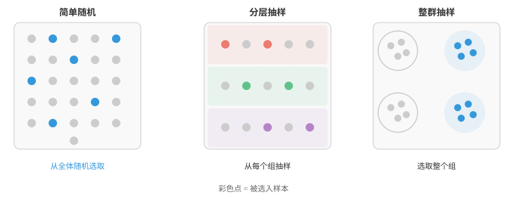
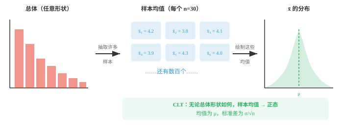

抽样（Sampling）¶
抽样决定我们如何收集数据，并直接决定每一项结论的质量。本节介绍随机抽样、分层抽样、整群抽样和系统抽样、抽样分布、大数定律和自助法，它们是 ML 训练/测试集划分和数据集整理的关键方法。
- 在理想世界中，你会测量所关心群体中的每一名成员。现实中这几乎不可能。你无法调查每一位选民、测试每一个灯泡或扫描每一位病人，因此需要抽取一个样本（sample），并用它了解整体。
大白话
全量调查通常太贵、太慢甚至根本做不到，所以只能看一小部分；关键不在样本多么复杂，而在它能否代表整体。
- 总体（population）是你想研究的全部个体或项目；样本是你实际观测到的其中一个子集。
大白话
总体是问题真正关心的全体人或物，样本是你手上实际拿到的那一小批数据。
- 参数（parameter）是描述总体的数值，例如一个国家全体成年人的真实平均身高。
大白话
参数是总体真实但通常未知的答案，例如全国平均身高；我们不能直接看见它，只能尝试估计。
- 统计量（statistic）是由样本计算得到的数值，例如测量到的 500 人的平均身高。统计量用于估计参数。
大白话
统计量是从样本算出来的临时答案，用它去猜总体参数；换一批样本，统计量通常会稍有不同。
- 结论的质量完全取决于样本的选取方式。无论分析多么复杂，带偏样本都会导致带偏结论。
大白话
后面的公式再高级，也救不了一开始就选偏的人群。垃圾样本只会得到更精确的错误结论。
- 抽样框（sampling frame）是实际从中抽取样本的全体个体名单。理想状态下，它与总体完全一致；现实中通常存在缺口。
大白话
抽样框就是你真正能抽到的名单。名单缺了某类人时，即使在名单内完全随机，整体也已经被遗漏。
- 例如，用电话调查人群时，所有没有电话的人都会被遗漏。抽样框与总体之间的差异称为覆盖误差（coverage error）。
大白话
电话名单只代表有电话的人，不代表所有人；被名单排除的群体会让调查结果天然偏向能被联系到的人。
- 抽样误差（sampling error）是样本统计量与总体参数之间自然存在的差异。
大白话
即使抽样没有偏见，随机抽到的这一批人也不可能刚好等于全体人，这种正常波动就是抽样误差。
- 即使完全随机的样本也不会与总体精确一致。样本越大，抽样误差越小。
大白话
随机不等于完美。多抽一些人通常会让偶然偏高或偏低互相抵消，使估计更稳。
- 抽样大体分为两类：概率抽样和非概率抽样。
大白话
区别在于每个人有没有清楚、可计算的入选机会；这决定结果能否严谨地推广到总体。
- 概率抽样（probability sampling）表示总体中的每个成员都有已知且非零的入选概率。它使我们能够量化不确定性并推广结果。
大白话
只要每个人都有可知的抽中机会，就能计算抽样会有多大误差，也更有资格把样本结论推广出去。
- 简单随机抽样（simple random sampling）：每个个体有相同的入选概率，大小为 \(n\) 的每个可能样本也等可能出现。可以把所有名字放进帽子里，再盲抽。
大白话
这是最纯粹的公平抽签：谁也不被优先照顾，任何同样大小的样本组合都有相同机会被抽到。
- 分层抽样（stratified sampling）：按共同特征，例如年龄段、地区，将总体划分为互不重叠的组，即层，再从每一层随机抽样。这保证每个群体都有代表，并在各层之间存在差异时降低方差。
大白话
先把不同类型的人分组，再每组都抽一些，避免小群体完全靠运气被漏掉；各组差异大时，这也能让估计更稳定。
- 整群抽样（cluster sampling）：将总体划分为若干组，即群，随机选中一些群，再纳入所选群内的所有成员。当总体在地理上分散时，这很实用，例如抽取整所学校，而不是抽取一个学区内分散的个别学生。
大白话
整群抽样是先随机挑几个自然形成的团体，再全部调查团体里的人，能明显减少跑动和组织成本。
- 系统抽样（systematic sampling）：随机选定起点，再从名单中每隔 \(k\) 个选取一人。例如从第 7 人开始，再取每第 10 人，即 7、17、27、……。它实现简单，但名单有隐藏规律时可能引入偏差。
大白话
系统抽样像从随机起点开始每隔固定距离取一个，执行方便；但若名单排列本身有周期，恰好会反复抽到同一类人。

- 非概率抽样（non-probability sampling）不为每个成员提供已知的入选概率。其结果不能严格推广，但这些方法通常更快、更便宜。
大白话
非概率抽样省事，但不知道哪些人更容易被选中，所以可以用于探索，不能严谨地宣称代表所有人。
- 便利抽样（convenience sampling）：选择最容易接触到的人。在商场调查很方便，但会遗漏不在该商场购物的人。
大白话
在眼前的人里随手调查最快，但这些人往往有共同特征，结果只能代表“方便找到的人”。
- 配额抽样（quota sampling）：类似分层抽样，但没有随机性。研究者通过从每个群体中选择容易接触的对象来填满配额，例如 50 名男性和 50 名女性。
大白话
配额能保证各类人数量看起来齐全，但每类里挑谁仍可能有偏差，因此它不等于真正的分层随机抽样。
- 滚雪球抽样（snowball sampling）：从少量参与者开始，请他们招募其他参与者。它适合难以接触的人群，例如研究罕见疾病，但会严重偏向彼此有联系的个体。
大白话
让受访者介绍受访者能找到隐藏群体，但熟人网络往往相似，样本容易越滚越偏向同一个圈子。
- 有了抽样方法后，自然会问：若换一个样本，得到的统计量会不同吗？答案几乎肯定是会。抽样分布（sampling distribution）是同一大小的所有可能样本中，某个统计量，例如样本均值，所形成的分布。
大白话
不要只盯一份样本的均值。设想把同样的抽样过程重复很多次，所有这些均值排成的分布就是抽样分布。
- 想象抽取 1,000 个不同的、每个包含 30 人的样本，再计算各样本的平均身高。这 1,000 个均值形成一个分布。有些略高于真实总体均值，有些略低，大多数则聚集在真实值附近。
大白话
每次抽 30 人都可能偏高或偏低，但大多数样本均值会围绕真实均值聚集；这种聚集程度就是估计的不确定性。
- 该抽样分布的标准差称为标准误（standard error）：
大白话
标准误不是原始个体数据有多分散，而是“换一次样本，估计值通常会跳多远”。
- 注意，随着 \(n\) 增大，标准误会缩小。样本更大，估计就更精确。样本量增至四倍，标准误会减半。
大白话
多收集数据确实能提高精度，但收益按平方根变慢：想把误差减半，通常需要四倍样本，不是两倍。
- 统计学中最重要的结果是中心极限定理（Central Limit Theorem，CLT）。它说：无论原始总体的形状如何，随着样本量增加，样本均值的分布都会趋近正态分布。
大白话
原始数据可以很偏、很怪，但把很多独立观测求平均后，这些平均值往往会呈现钟形分布。

- 更精确地说，若 \(X_1, X_2, \ldots, X_n\) 是来自任意一个均值为 \(\mu\)、有限方差为 \(\sigma^2\) 的分布的独立观测，随着 \(n\) 增大：
大白话
这条公式说明样本均值仍以真实均值为中心，但它的方差缩小为原来的 \(1/n\)，所以样本越多越集中。
- 中心极限定理使大部分推断统计成为可能。只要样本足够大，即使底层数据并不服从正态分布，它也让我们能将正态分布作为近似。
大白话
很多统计检验之所以能用正态近似，不是因为原始数据必须钟形，而是因为大样本的平均值往往近似钟形。
- 多大才算“足够大”？常见经验法则是 \(n \ge 30\)，但这取决于总体偏离正态的程度。高度偏斜的分布可能需要更大的样本；大致对称的总体即使 \(n = 10\) 也可能足够。
大白话
30 只是经验起点，不是魔法门槛。数据越偏、尾巴越重或依赖越强，就需要更多样本才能放心近似。
- 中心极限定理有三个关键条件：
大白话
中心极限定理不是任何数据都自动适用，下面三个条件保证“反复平均”确实在累积独立、相似的随机信息。
-
独立性（independence）：每个观测不能影响其他观测。
大白话
前一个观测会改变后一个观测时，信息会重复或连锁，平均后的不确定性就不能按普通公式计算。
-
有限方差（finite variance）：总体方差必须存在，排除一些特殊的分布。
大白话
如果极端值的影响大到连正常的离散程度都定义不了，均值的稳定性也可能失去保证。
-
同分布（identical distribution）：所有观测来自同一个分布。
大白话
每个观测最好来自同样的生成规则；把性质完全不同的群体硬混在一起，会改变平均值的含义和近似效果。
编程任务（使用 CoLab 或 notebook）¶
-
直观演示 CLT：从高度偏斜的分布中抽样，计算样本均值，观察均值直方图如何变成钟形。
import jax import jax.numpy as jnp import matplotlib.pyplot as plt key = jax.random.PRNGKey(0) # Exponential distribution (very skewed) population = jax.random.exponential(key, shape=(100_000,)) fig, axes = plt.subplots(1, 4, figsize=(14, 3)) sample_sizes = [1, 5, 30, 100] for ax, n in zip(axes, sample_sizes): keys = jax.random.split(key, 2000) means = jnp.array([jax.random.choice(k, population, shape=(n,)).mean() for k in keys]) ax.hist(means, bins=40, color="#3498db", alpha=0.7, density=True) ax.set_title(f"n = {n}") ax.set_xlim(0, 4) fig.suptitle("CLT: sample means become normal as n increases", fontsize=13) plt.tight_layout() plt.show() -
比较简单随机抽样和分层抽样。构造由不同群体组成的总体，说明分层抽样能使估计的方差更低。
import jax import jax.numpy as jnp key = jax.random.PRNGKey(42) # Population: two distinct groups group_a = jax.random.normal(key, shape=(500,)) + 10 # mean ~10 key, subkey = jax.random.split(key) group_b = jax.random.normal(subkey, shape=(500,)) + 20 # mean ~20 population = jnp.concatenate([group_a, group_b]) # Simple random sampling: 1000 trials, sample size 20 srs_means = [] for i in range(1000): key, subkey = jax.random.split(key) sample = jax.random.choice(subkey, population, shape=(20,), replace=False) srs_means.append(sample.mean()) srs_means = jnp.array(srs_means) # Stratified sampling: 10 from each group strat_means = [] for i in range(1000): key, k1, k2 = jax.random.split(key, 3) s_a = jax.random.choice(k1, group_a, shape=(10,), replace=False) s_b = jax.random.choice(k2, group_b, shape=(10,), replace=False) strat_means.append(jnp.concatenate([s_a, s_b]).mean()) strat_means = jnp.array(strat_means) print(f"Simple Random - Mean: {srs_means.mean():.3f}, Std: {srs_means.std():.3f}") print(f"Stratified - Mean: {strat_means.mean():.3f}, Std: {strat_means.std():.3f}") print(f"Stratified sampling reduced variance by {(1 - strat_means.var()/srs_means.var())*100:.1f}%") -
探索样本量如何影响标准误。绘制标准误与样本量的关系，并确认 \(1/\sqrt{n}\) 关系。
import jax import jax.numpy as jnp import matplotlib.pyplot as plt key = jax.random.PRNGKey(7) population = jax.random.normal(key, shape=(50_000,)) * 10 + 50 sample_sizes = [5, 10, 20, 50, 100, 200, 500, 1000] std_errors = [] for n in sample_sizes: means = [] for _ in range(500): key, subkey = jax.random.split(key) sample = jax.random.choice(subkey, population, shape=(n,)) means.append(sample.mean()) std_errors.append(jnp.array(means).std()) plt.figure(figsize=(8, 4)) plt.plot(sample_sizes, std_errors, "o-", color="#e74c3c", label="Observed SE") theoretical = population.std() / jnp.sqrt(jnp.array(sample_sizes, dtype=jnp.float32)) plt.plot(sample_sizes, theoretical, "--", color="#3498db", label="σ/√n (theoretical)") plt.xlabel("Sample size (n)") plt.ylabel("Standard error") plt.legend() plt.title("Standard error shrinks with larger samples") plt.show()